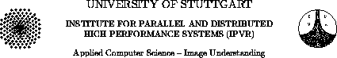

UNIVERSITY OF STUTTGART
INSTITUTE FOR PARALLEL AND DISTRIBUTED
HIGH PERFORMANCE
SYSTEMS (IPVR)
Applied Computer Science -- Image Understanding
SNNS
Stuttgart Neural Network Simulator
User Manual, Version 4.1

Andreas Zell, Günter Mamier, Michael Vogt
Niels Mache, Ralf Hübner, Sven Döring
Kai-Uwe Herrmann, Tobias Soyez, Michael Schmalzl
Tilman Sommer, Artemis Hatzigeorgiou, Dietmar Posselt
Tobias Schreiner, Bernward Kett, Gianfranco Clemente
Jens Wieland
external contributions by
Martin Reczko, Martin Riedmiller
Mark Seemann, Marcus Ritt, Jamie DeCoster
Jochen Biedermann, Joachim Danz, Christian Wehrfritz
Randolf Werner, Michael Berthold, Bruno Orsier
SNNS
Stuttgart Neural Network Simulator
User Manual, Version 4.1
Report No. 6/95
All Rights reserved